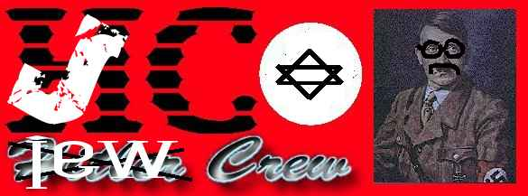
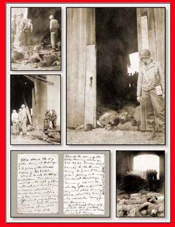

|  |  |
The interpreter showed us one particularly
ghastly picture--a depiction of a very, undernourished old man, dangling from
a barbed-wire fence. This poor soul, according to the guide, had committed suicide
by electrocuting himself on the fence. Just when I thought I had seen enough,
I discovered something even more disquieting--pictures of children and more
children, all wearing black and white striped uniforms and huddling piteously
behind coils of cruel barbed-wire. Children, why children? What possible threat
could mere kids have been? I stared in disbelief. Ron
Bereznicki
m33p m33p... yew got owned by pr|est you silly
admin... this defacement is a *NO* to the kids of the Hitler Crew...
Admin, nothing got harmed, renamed index.html to index.bak... I also removed
your logfiles cos i dont like this
ip to be shown up... email me at uberl33t@usa.net if you wanna know what the
hell is going on..
Mad shoutouts + props fly out to
XFoN, dislexik, smooth, drumcode, neon-lenz, local-uk
(silly greetbegger ;p), k-rad-b0b
b0g.org , attrition, alldas, everybody that
supports us ofcourse and all i forgot..
Little disclaimer,
The site I hacked got nothing to do with nazi regimes etc, we just want to use
their website for a little bit of hosting against the nazis of the Hitler Crew..
If you still feel offended by it, sorry, cant help it..
Luv you all, pr|est..
* The jew crew? [consists so far of, pr|est, dislexik,
neon-lenz.. join us!]
Yeah, the jew crew is a merge of a couple of people who had enough of the
hitler crew their sadness.. It's rather pathetic to praise a man
that caused so much damage, entire families are still suffering about it.. This
man, killed thousands, if not millions of innocent people on the
most inhuman ways.. Think of gaschambers, where people got gassed to death,
killed by "medical" experiments, etc.. This all because of their
relegion, race, sexual preferences.. In this "man's" eyes, he was
creating a better world for the germans..
We should consider ourselves lucky that probably none of us was born already..
It kinda seems that the Hitler crew thinks the opposite of this.. I just dont
have any words for this... All i can say is, sad sad people.. go get
a
life.. You wont get any fame with this.. All you'll get is hate... I'll be happy
to see the feds busting your ass.. And put you in a gas chamber,
to let you guys feel the same, as the people in the concentration camps did
60 years ago.. And by the way, at least Hitler dared to reveal his
name and shout he was a nazi.. You guys dont even give out nicks.. I think that
deep in your hearts you know, you are making no sense at all..
I want to say thanks for the people that support us, and want to spread the
word of the jew crew... email me, pr|est, at uberl33t@usa.net
pr|est, proud to be a jew crew member...
{kind=link}